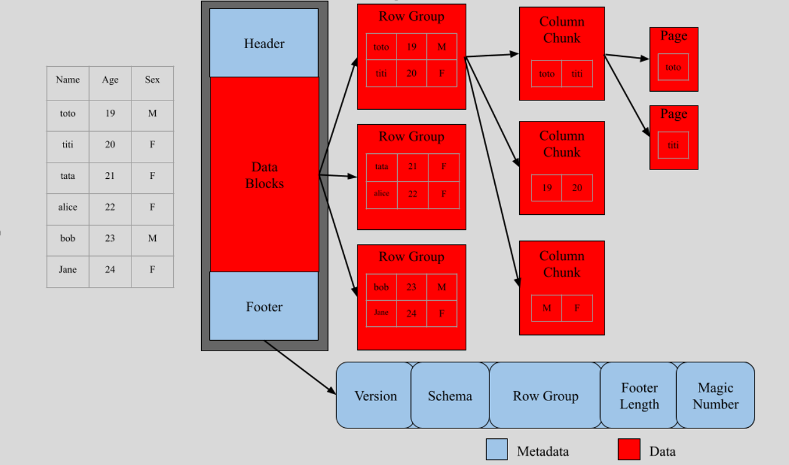
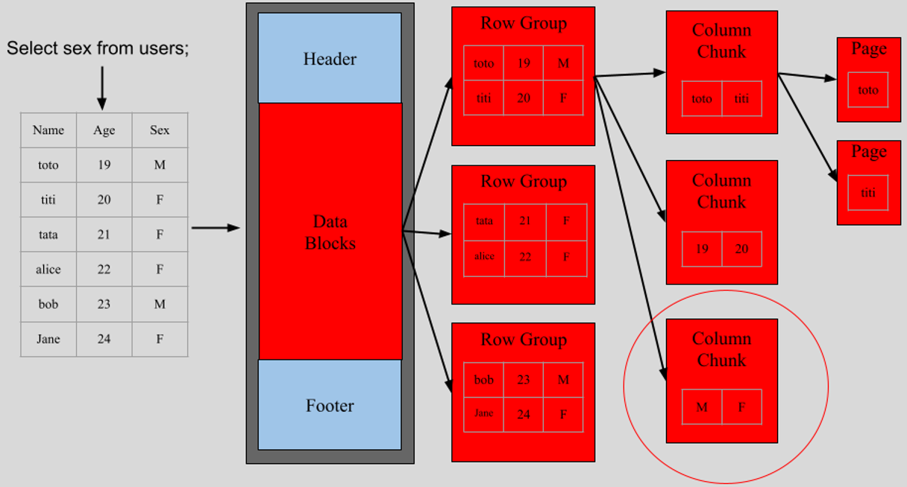
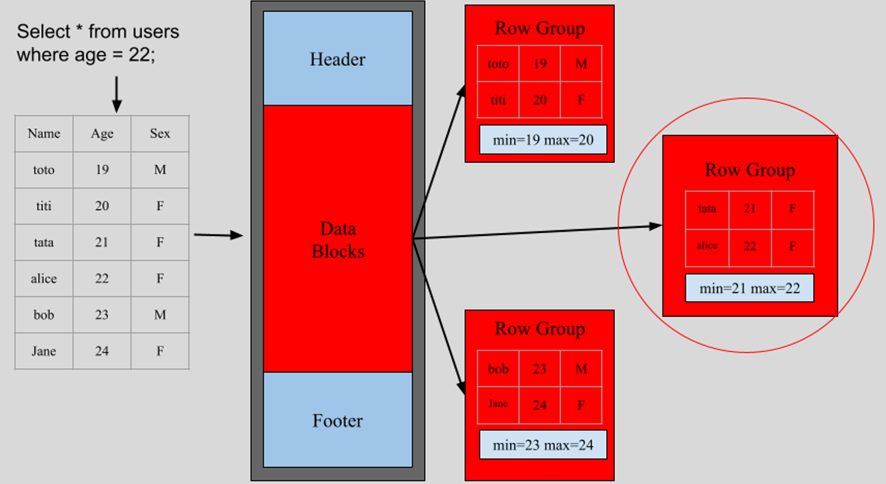
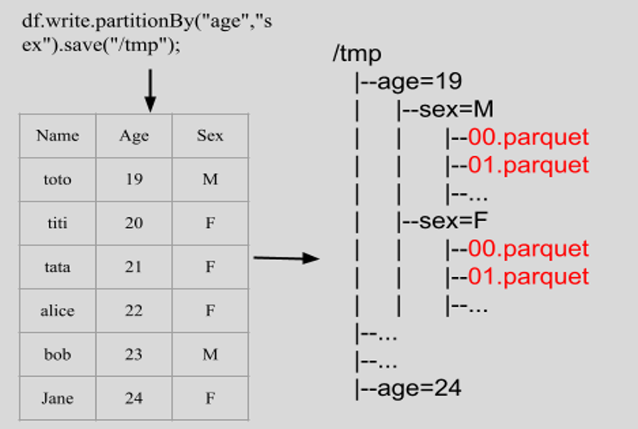
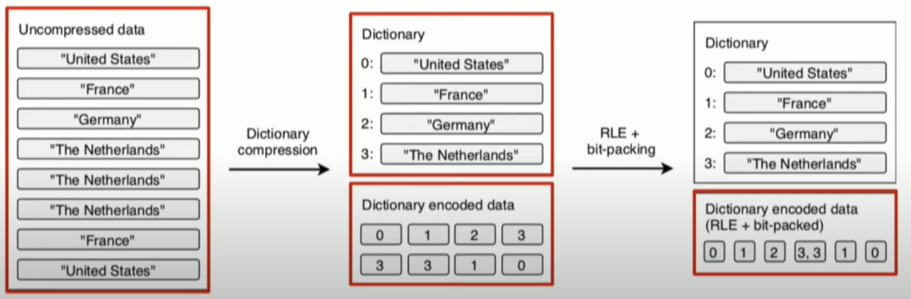

Parquet and GeoParquet
Datascience team
Goals
- What is Parquet?
- How to read/write Parquet file?
- What is GeoParquet?
- How to read/write GeoParquet?
What is Parquet?
Apache Parquet is a columnar storage file format widely used in big data analytics (e.g. Spark, Flink, Hive, Dask, DuckDB, etc.).
Apache Parquet was launched by Cloudera and Twitter in 2012, top level apache project since 2015. Two major versions(v1 and v2) have been released.
Advantages of Parquet
- Storage space efficiency: 5-10 times less storage space compare to CSV, json.
- Analytical query efficiency: 5-10 times faster query time compare to CSV, json.
- Schema evolution: Supports adding new columns without rewriting the entire dataset.
- Vast framework support: Spark, Flink, Pandas, Dask, DuckDB, etc.
Some disadvantage of Parquet.
- Not ideal for small datasets: metadata and encoding may cost you more than the actual data
- Not human-readable: Parquet is a binary format, requires tool to read and debug
- Heavy cost on write: Writing parquet file is more CPU-intensive compare to CSV, json (e.g. sorting, encoding, compression)
- Heavy cost on insert: Insert or update a row may require to rewrite the whole parquet file
Key concepts in parquet
- Columnar storage: Parquet organizes data column by column instead of row by row.
- Projection push-down, predicate push-down: Parquet provides column level index to reduce data IO.
- Partitions: Parquet splits data into partitions.
- Integrated schema and metadata: Parquet contains full dataset schema and customizable metadata
- Encoding and compression: Parquet provides column level encoding and compression
Column storage vs Row storage
- Column oriented(e.g. Parquet, ORC): Write Once Rea Many(WORM) paradigm, less storage usage, less computing time.
- Row oriented(e.g. CSV, SAS7BDAT): Easy to insert new rows
Parquet file layout example
Projection pushdown
Projection pushdown is an optimization where the query engine only reads the columns that are actually requested, instead of scanning all columns from a Parquet file.
Predicate pushdown
Predicate pushdown is an optimization where filtering conditions are applied directly while reading Parquet files, rather than loading all the data into memory and then filtering.
Partitioning
Partitioning is a data organization technique where a large dataset is split into multiple Parquet files based on the values of one or more columns. Instead of storing all rows in a single file, rows are grouped into folders (directories) according to partition column values.
Encoding
Encoding is a technique for representing column values in a more compact way to reduce storage size and improve scan performance. Parquet supports: Dictionary Encoding, Run-Length Encoding (RLE), Bit-Packing (BIT_PACKED), Delta Encoding, etc.
Compression
Compression in Parquet is applied on data pages (after encoding) to further reduce storage size and speed up I/O. Each Parquet column chunk can use a different compression codec, independent of others.
- Snappy(Spark default): Fast compression & decompression, moderate compression ratio.
- Gzip: Higher compression ratio than Snappy, slower read/write performance
- Zstd (Zstandard): Better compression ratio than Snappy, much faster decompression than Gzip
- LZ4: Very fast compression, lower compression ratio than Zstd or Gzip
- Brotli: Very high compression ratio (better than Gzip in many cases), slower than Snappy/LZ4